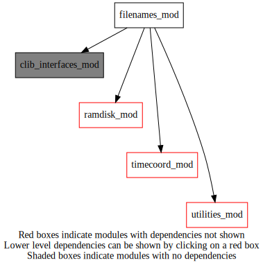
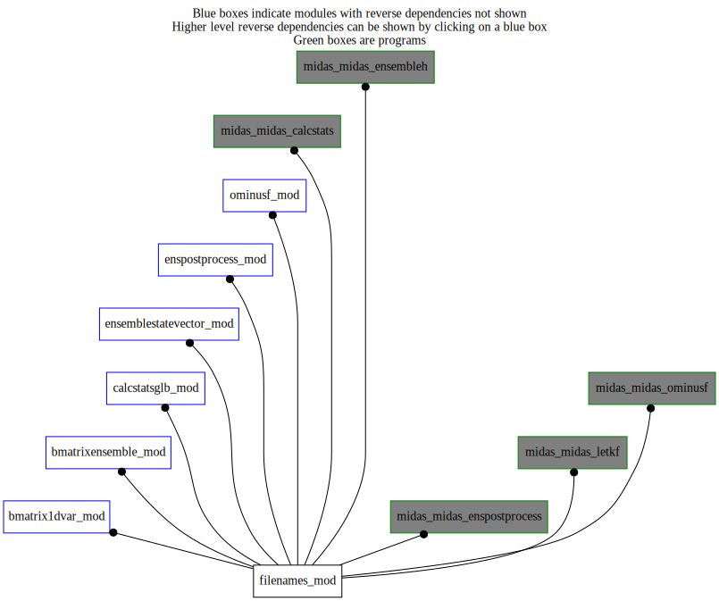

Dependency Diagrams:
 Direct Dependency Diagram¶
 Reverse Dependency Diagram¶
Description
MODULE fileNames_mod (prefix=’fln’ category=’7. Low-level data objects’)
- Purpose
Routines related to file names
Quick access
Needed modules
utilities_mod: MODULE utilities_mod (prefix=’utl’ category=’8. Low-level utilities and constants’)
clib_interfaces_mod: MODULE clib_interfaces_mod (prefix=’’ category=’9. Global interfaces’)
ramdisk_mod: MODULE ramDisk_mod (prefix=’ram’ category=’8. Low-level utilities and constants’)
timecoord_mod: MODULE timeCoord (prefix=’tim’ category=’7. Low-level data objects’)Variables
Subroutines and functions
- subroutine filenames_mod/fln_ensfilename(ensfilename, enspathname[, memberindex_opt[, ensfilenameprefix_opt[, ensfilebasename_opt[, shouldexist_opt[, ensemblefileextlength_opt[, copytoramdisk_opt[, resetfileinfo_opt[, filememberindex1_opt]]]]]]]])¶
- Purpose
Return the filename of an ensemble member. Will also call routine in ramdisk_mod module that will copy the file (if shouldExist_opt is true) to the ram disk. If the memberIndex_opt is not specified, the filename is returned without the member index extension (used to read deterministic background state that is stored in the ensemble directory for LETKF).
- Arguments
ensfilename [character ]
enspathname [character ]
- Options
memberindex_opt [integer ]
ensfilenameprefix_opt [character ]
ensfilebasename_opt [character ]
shouldexist_opt [logical ]
ensemblefileextlength_opt [integer ]
copytoramdisk_opt [logical ]
resetfileinfo_opt [logical ]
filememberindex1_opt [integer ]
- Called from
bmat1d_setupbens(),ben_setuponeinstance(),csg_setup(),calclocalvertcorrmatrix(),ens_readensemble(),ens_writeensemble(),omf_ominusfens(),midas_calcstats,midas_enspostprocess,midas_ensembleh,midas_letkf,midas_ominusf- Call to
- subroutine filenames_mod/fln_ensanlfilename(ensfilename, enspathname, datestamp[, memberindex_opt[, ensfilenameprefix_opt[, ensfilenamesuffix_opt]]])¶
- Purpose
Return the filename for an analysis state, including for ensemble members (by specifying memberIndex_opt). The member index extension is assumed to be 4 digits.
- Arguments
ensfilename [character ]
enspathname [character ]
datestamp [integer ]
- Options
memberindex_opt [integer ]
ensfilenameprefix_opt [character ]
ensfilenamesuffix_opt [character ]
- Called from
ens_writeensemble(),epp_postprocess(),epp_writetoallmembers()
- subroutine filenames_mod/fln_enstrlfilename(ensfilename, enspathname, datestamp[, memberindex_opt[, ensfilenameprefix_opt[, ensfilenamesuffix_opt]]])¶
- Purpose
Return the filename for a trial state, including for ensemble members (by specifying memberIndex_opt). The member index extension is assumed to be 4 digits.
- Arguments
ensfilename [character ]
enspathname [character ]
datestamp [integer ]
- Options
memberindex_opt [integer ]
ensfilenameprefix_opt [character ]
ensfilenamesuffix_opt [character ]
- Called from
{kind=link}
{kind=link}